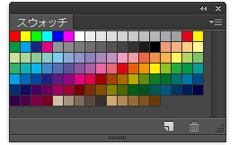
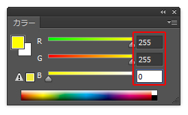
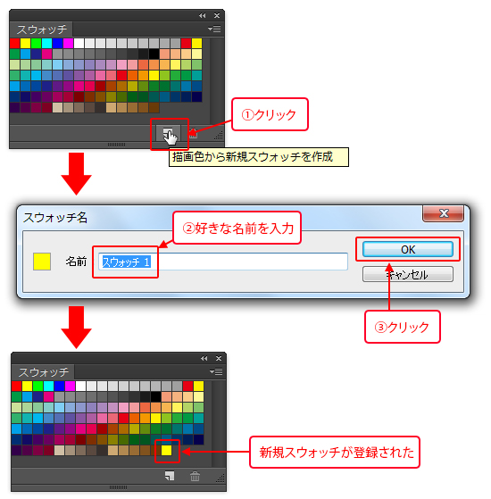
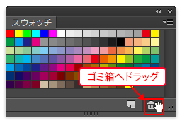

本項では、スウォッチパネルの使い方について学習します。
[スウォッチパネル]には、よく使用するカラーを格納できます。
標準でカラーが登録されており、使用したいカラーをクリックするだけで、
「描画色」として設定することができます。

メニューバーの[ウィンドウ]-[スウォッチ]を選択し、[スウォッチパネル]を表示します。
カラーパネルで作成したカラーを登録します。
カラーパネルで、「R」に《255》、「G」に《255》、「B」に《0》を入力し、
「黄色」を作成します。

[スウォッチパネル]下部の、[描画色から新規スウォッチを作成]をクリックすると、
[スウォッチ名]ダイアログボックスが表示されますので、ここは初期値のままOKを押します。
すると、先ほど設定した描画色が新規スウォッチとして登録されます。

[スウォッチパネル]に登録した色を削除するには、
削除したい色を[スウォッチパネル]下部にあるゴミ箱へドラッグします。
先ほど登録したカラーを削除してみましょう。

以上でこの項の学習は終了です。
次の項へ進んでください。